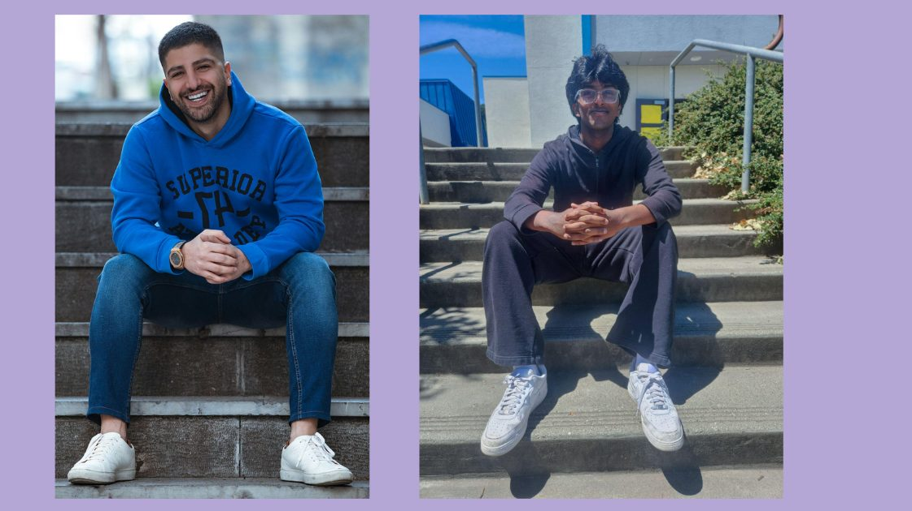
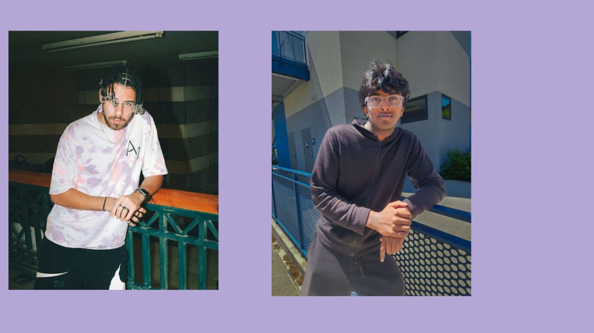
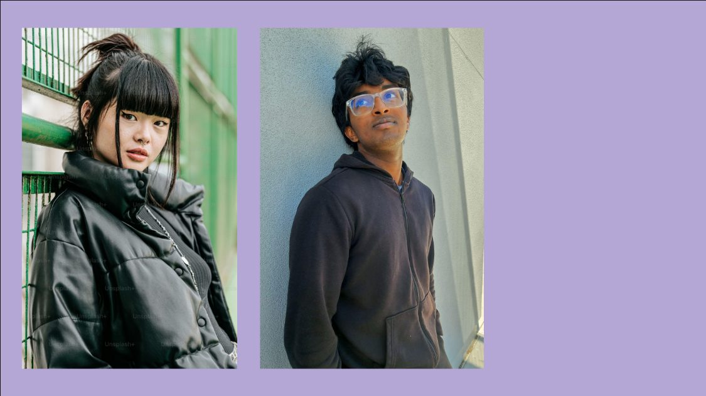
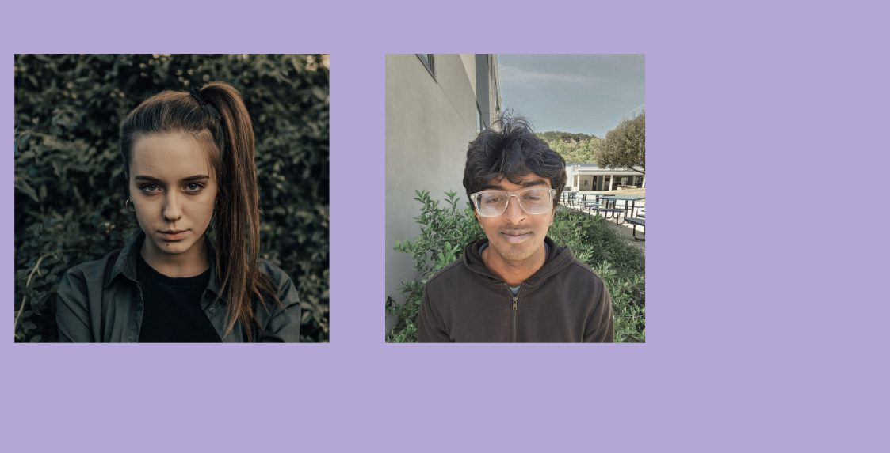
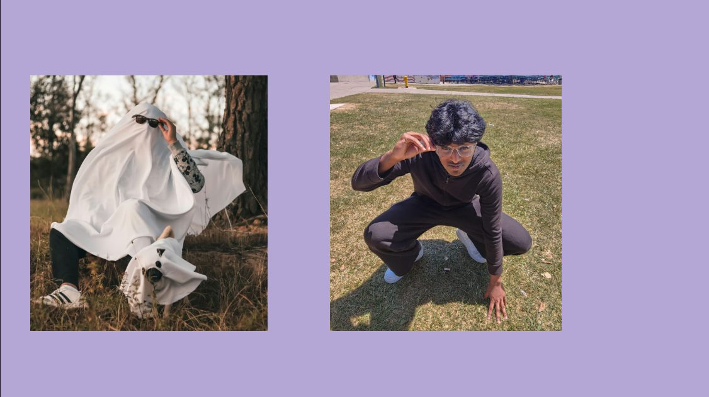
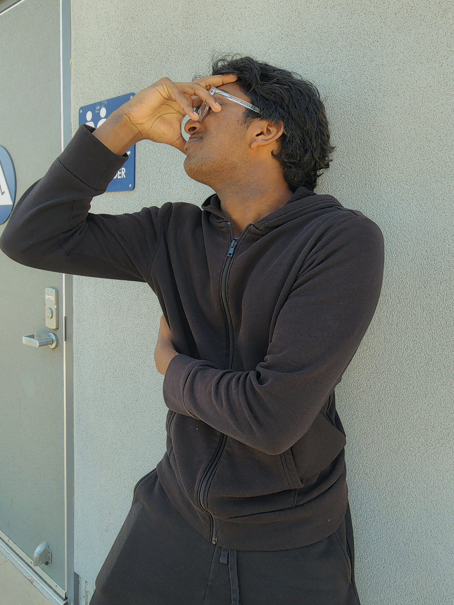

This assignment studied posing and presentation through a slide deck and a sixth finished image. The collection shows how body position, framing, and expression can change the feeling of a portrait.





